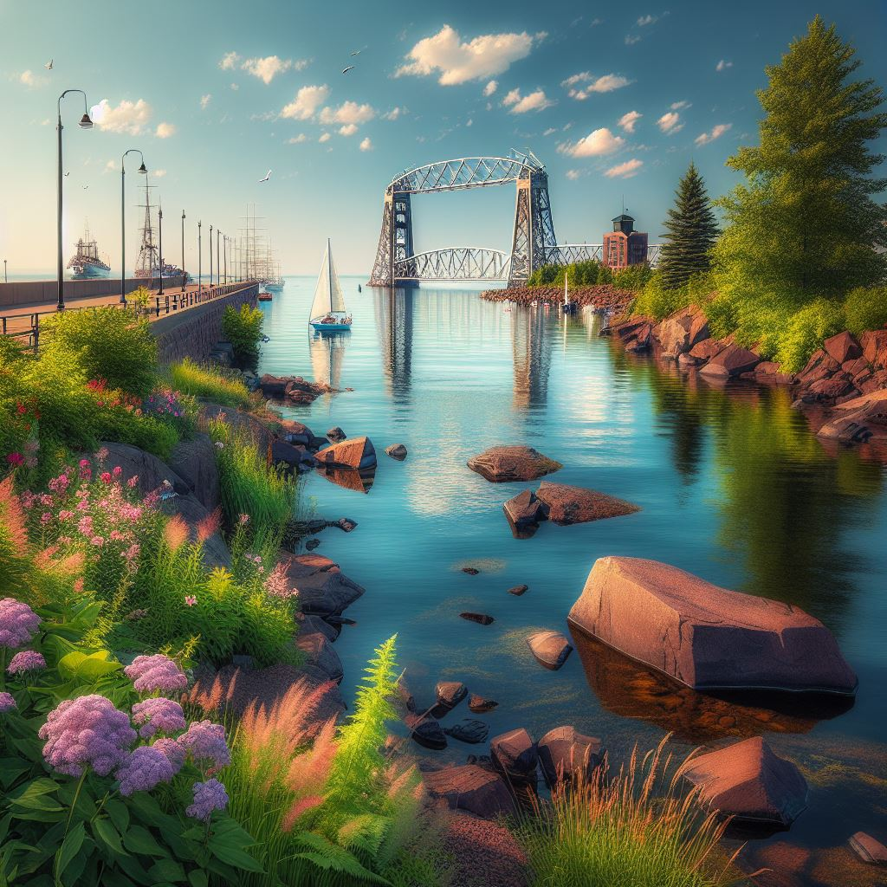
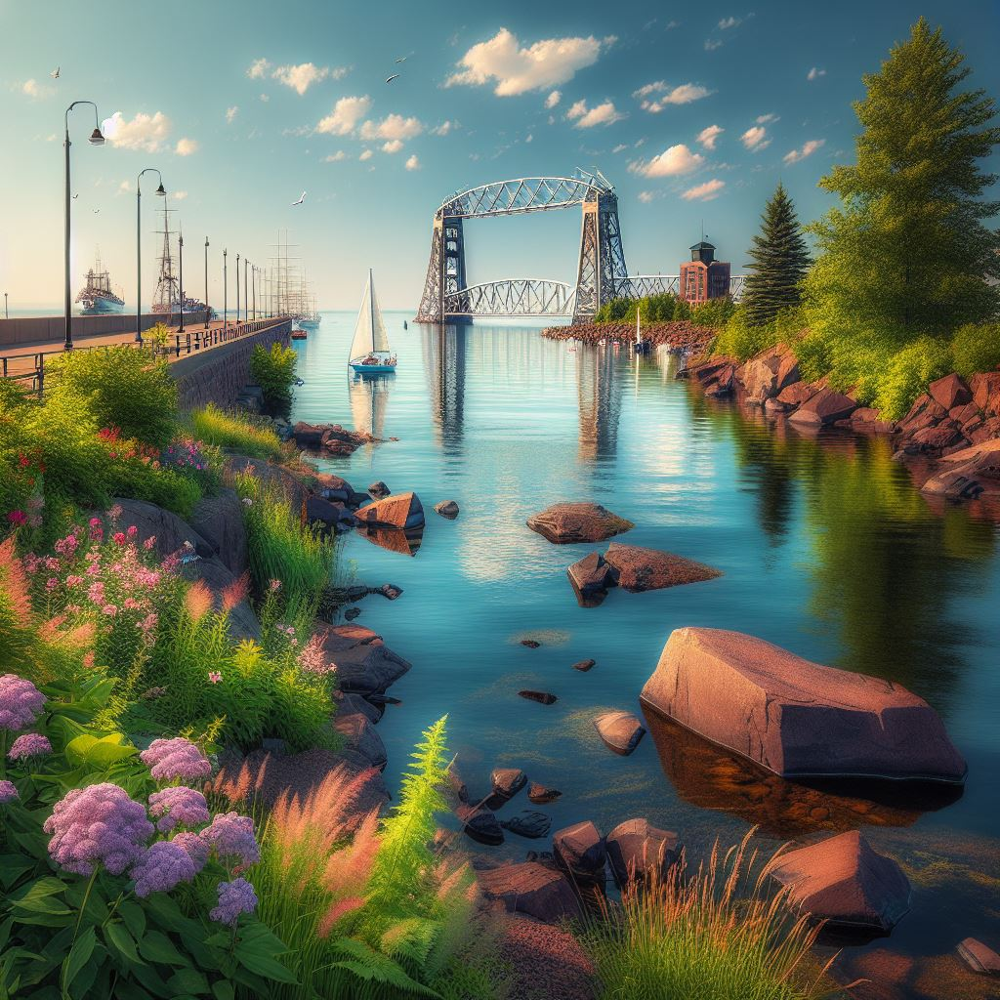
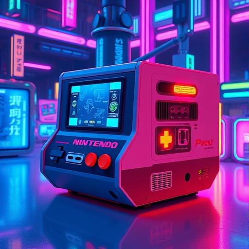
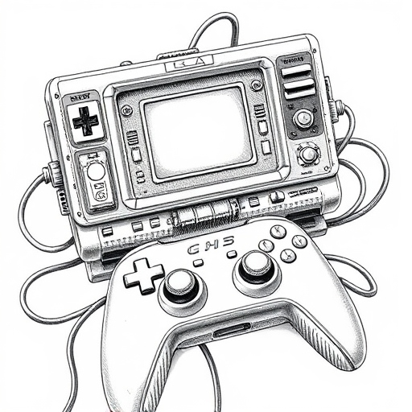
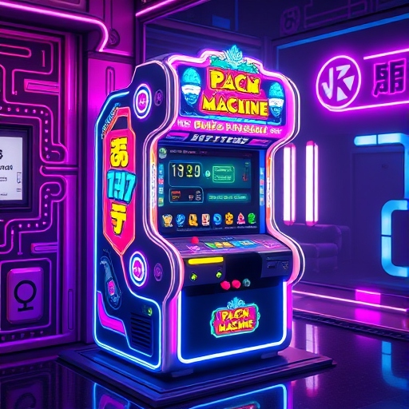
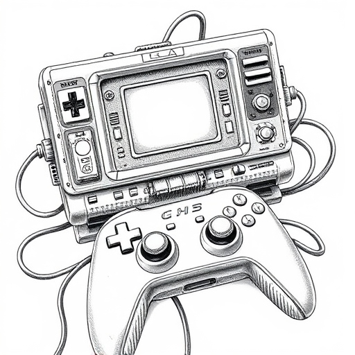
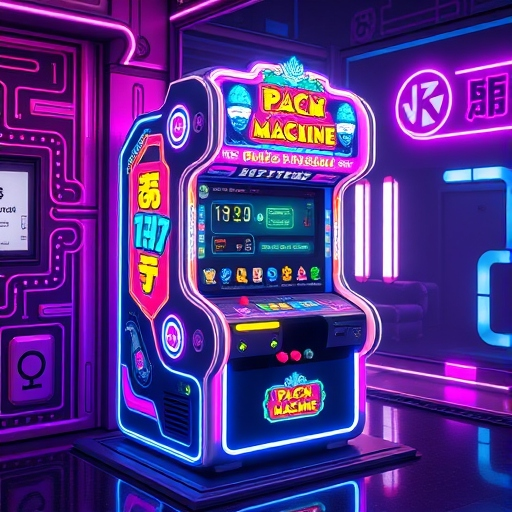
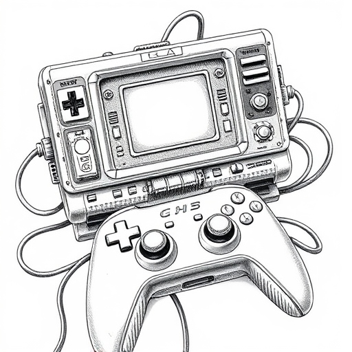
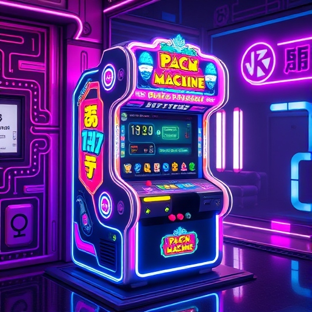

Projects
Exploring Creativity and Innovation
UMD AND DULUTH
"
My journey at UMD and life in Duluth has been a rewarding experience so far, the tight-nit campus combined with the love and appreciation of nature make it so homely.
My UMD Experience:
Personal reflection on my time at UMD and why I love Duluth
Images:
.jpeg)
.jpeg)
.jpeg)
.jpeg) 

Videos:
PROJECT DEVELOPMENT
My Journey Creating This Website
Building this website has been both challenging and engaging. I knew it would take a lot of time, and at first, I struggled to find the motivation. But as I kept working on it, I started finding ways to make it more fun for myself. I enjoyed making it look neat and cutesy, and I had a great time incorporating things I love, like cats and gaming.
I want to say the hardest part of the project was building the game. It took up so much of my time just to get it to work the way I wanted. Even now, I’ll admit it has its flaws, but I’m happy it actually works, despite the issues. Although honestly, the most frustrating part for me was filling in all the little details. Just when I thought I was done, I’d realize there was something else I’d forgotten to do! Still, despite all the little challenges, I’m really glad I got the chance to create this website. It was a tough but enjoyable experience, and I’ve learned a lot from it. Plus, now I can actually put it on my resume, which is pretty awesome!Problems I Overcame
- Keeping the visual style neat
- Building a working game
- Creating a downloadable button
- Understanding HTML code
- Implementing music and other
- Incoperating AI and media
- Writing and understanding discovery topic
OTHER AI
Images:

.jpg) 





